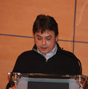

| Pellizcos... |
Saludo del Presidente
DISCURSO EN EL ACTO DE DISTINCIÓN A LA EXCELENCIA TURÍSTICA A LOS ANTIGUOS ALUMNOS DEL PATRONATO “VIRGEN DEL PUERTO”
Santoña, 1 de Junio de 2013
Sr. Teniente General Jefe del Mando de Personal; Sra. Alcaldesa de nuestra querida Villa de Santoña, Sr. Consejero de Turismo del Gobierno de Cantabria, Sra. Diputada Nacional, autoridades, compañeros y amigos todos.
En Octubre hará tres años que celebrábamos el 50 aniversario de la creación del Patronato, una efeméride que seguro tuvo un efecto inenarrable entre todos los que tuvimos la suerte de haber vivido ese acontecimiento.
¿Cuál fue la causa que atrajo a profesores, celadores y antiguos alumnos a celebrar con tanto entusiasmo, esos 50 años de nuestro Patronato? Sin duda alguna y el principal motivo tiene un nombre: Santoña.
Porque, Santoña, es un reclamo para la gran mayoría de los que tuvimos la suerte de pasar por este Viejo Cuartel. El Patronato nos une, pero por encima de todo, Santoña nos llama.
Y tanto es así que, al cabo del año, se producen “quedadas”, cariñosamente llamadas, entre los distintos compañeros de diferentes promociones y que, últimamente se entrelazan éstas, no importando edades ni cursos, porque el único motivo para juntarse no es otro que volver a Santoña; sí, somos los del Patronato, de Santoña.
Santoña nos llama, nos atrae, nos enamora, nos emborracha con su brisa marina, su olor a sal, su bahía y el Patronato.
Un antiguo alumno glosaba en una canción al Patronato que, en Santoña, vio por primera vez el mar. Esa sensación de ver esa inmensidad océana se tornó en admiración que, a buen seguro, cada vez que volviera a su tierra extremeña, en el acogedor Valle del Ambroz, contaría con todo detalle a todos sus amigos que, extasiados, le escucharían.
Lo mismo que le sucedería a cada uno de los que hemos sido afortunados de vivir en este hermoso rincón de España. ¿Cómo íbamos a dejar de decir lo bonito que es Castro Urdiales, o San Vicente, o Comillas, o el Valle del Pas o Cantabria entera y cómo no, Santoña con la plaza de San Antonio y sus calles y rincones, el monte Buciero, sus acantilados, Berria…
Cada uno de los más de diez mil alumnos que hemos pasado por el Patronato, seguro que tenemos una visión diferente de Cantabria , pero no importa del color con el que miremos, siempre vemos y coincidimos en lo mismo, para nosotros nuestro centro es esta Santoña marinera que huele a marisma y a sal; y sentarnos en un banco que está bajo los pinos y mirar la Bahía, ver los niños jugar por el pasaje, mojarnos con la lluvia, pasar la mano por las piedras del Patronato, hacernos la típica foto en la puerta, asomarnos por los cristales para vernos jugando en el patio…. Dar un paseo por la Villa, ponernos de rodillas ante la Virgen de Puerto y darle las gracias porque después de tantos años estamos aquí… tomarnos unos vinos, unas anchoas, pasear por la Plaza de San Antonio, acercarnos al puerto a sentir su olor, su limpieza, asomarnos al agua y ver nuestra cara reflejada tantos años después.
La imposibilidad que para muchos de nosotros supone venir a la tierruca, produce nostalgia y ansiedad, dada la lejanía en la que nos encontramos, no en vano los hay que se encuentran en Australia, otros en Noruega, Estados Unidos y más cercanos en Canarias, Murcia, Baleares, Cataluña, Extremadura, Madrid… Concretamente mi hermano, el moderador-presentador y yo, venimos desde Huelva… muy alejados para la atracción que para nosotros significa Santoña.
Imagínense tantísimas voces hablando de Santoña por todo el mundo… Por todo ese cariño a Santoña y a Cantabria, en mi nombre y en el de todos mis compañeros, quiero agradecer la distinción con la que nos honran y tengan por seguro que no encontrarán mejores embajadores de esta bendita tierra que en los Antiguos Alumnos del Patronato Militar “Virgen del Puerto”.
Asimismo quiero agradecer al Ejército, en la persona del Teniente General aquí presente (o nombre), el habernos dado la oportunidad de realizarnos desde este viejo cuartel y por todas las atenciones recibidas y facilidades para poder realizar este acto.
A todos, muchas gracias.
ooo0ooo
Homenaje a los celadores
 |
Santoña, 1 de junio de 2.013
Sr. Coronel Director, Sra. Alcaldesa y demás autoridades; queridas
Pastoras, queridos Pastores y Pingüinos.
Cuando en el mes de septiembre del lejano año 1.982 llegué aquí a
Santoña, al Patronato, no sabía ni pensaba que mi estancia en este
bello lugar durante 3 años marcaría mi vida para siempre. Por aquel
entonces tenía 15 años, hoy tengo unos pocos más, pero sigo siendo
aquel niño (y nunca mejor dicho porque lo llevo en el apellido) al que
le gusta respirar la brisa del Pasaje, pasear por las calles del pueblo,
sentarse en la Plaza de San Antonio, o tomar los vinos en el Zatón con
unas bravas de aperitivo.
No recuerdo exactamente qué día terminé mis estudios en este centro
tan querido por todos nosotros, pero sé que fue en el mes de junio del
año 1.985, y, por lo tanto, como estamos en el mes de junio del año
2.013, si no he fallado en la resta llevando, hace la friolera de 28 años.
Desde entonces y durante todos estos años, siempre ha estado
presente en mi memoria todo lo que el Patronato, Santoña y Cantabria
significan, y las visitas que a lo largo de estos años, tanto yo como
muchos de nuestros compañeros, hemos realizado más o menos
frecuentemente a esta Villa, a título particular o en reuniones de
amigos, o en actos institucionales como fueron la celebración del 50
Aniversario en el 2.010, o la Quedada con Jura de Bandera incluida
del año pasado, o este tan entrañable acto al que hoy somos tan
afortunados de poder asistir y poder celebrar, no han hecho más que
acentuar mi admiración y afecto por esta tierruca.
Además del reconocimiento tan importante que acabamos de recibir
como Asociación de Antiguos Alumnos del Patronato por nuestra
contribución a la Promoción Turística de Santoña y de Cantabria, es
también especialmente importante para nosotros aprovechar esta
oportunidad para homenajear como se merecen a esas personas tan
queridas, conocidas con el cargo de “celadores”, encargadas de
nuestra educación durante todos esos años de estancia en este viejo
cuartel.
De entre toda la lista de celadores que cuidaron y educaron a los
pingüinos y a las pastoras y pastores que aquí nos formamos, ya
nombrados por el Presidente, queremos en este reconocimiento
resaltar la figura del que más años lleva ejerciendo esa función en el
Patronato, y al que pronto le llega el turno de la jubilación, que tan
bien merecidamente se ha ganado.
Hablo de un hombre que marcó nuestros años de juventud con sus
nobles consejos, un hombre sencillo, un hombre que pasados los años
ha dejado en todos nosotros una huella y un recuerdo imborrables;
con su genio y con su talante siempre justo, supo frenar nuestros
impulsos de juventud, y enseñarnos a ser buenos ciudadanos.
Sus famosos partes “quetecagas” forman parte de la historia de este
Patronato (que levante la mano el que no haya sufrido uno); sus años
dedicados a tantas promociones de alumnos y alumnas no podían
pasar desapercibidos, y hoy él, en nombre de todos los celadores,
recibe el homenaje de la Asociación de Antiguos Alumnos del
Patronato Virgen del Puerto de Santoña, acto en el que hemos querido
recordarlos a todos, a los que ya no están entre nosotros, a los que
estuvieron y a los que están; y en especial a ti, Daniel, por esos casi
50 años de tu vida que nos has dedicado.
Gracias de corazón a todos los celadores, y en especial a Daniel.
¡¡ Viva Daniel el Chón !! ... ¡¡ Viva el Patro !! ... ¡¡ Viva Santoña !!
Juan Ignacio Niño Taboada (Pinky)
ooo0ooo
Jesús Mª García Hueto
Los ojos recorren las paredes en busca de palabras con las que adornar este
texto, los dedos nerviosos y unos segundos el aliento queda en el pecho contenido y las manos
se apoyan en la nuca buscando la inspiración y las palabras que brotan del corazón pero no encuentran la salida.
Que difícil escribir cuando el corazón te dicta las palabras tan deprisa que las teclas no dan más de sí!
Que difícil es escribir cuando el alma se te despista pensando en las añoranzas de los momentos vividos hace una semana, y no responde a tu petición de inventar algo sincero cuando las sensaciones vividas, los sitios, las personas queridas, Cantabria, Santoña, el Patronato están tan lejos , y estas letras negras que aparecen en la pantalla me gustaría que fueran verde esperanza, y con ello vivo, aunque saben esas letras que tardaran en hacerse realidad.
El mar, siempre el mar con su inmensidad y su tristeza, ese cielo gris plomizo que todo lo cubre sin dejar escapar ni un rayo de luz ante tanta tristeza que solo se supera con los recuerdos, los momentos y la fuerza de volver. Paseaba por el pasaje, de madrugada y escuchaba el mar y en la otra acera el Patronato…algunos amigos ya se habían recogido, otros saboreaban los últimos sorbos y los últimos besos de este encuentro.
La distancia; cuantos kilómetros… quien os pudiera convertir en abrazos y besos y quien esos besos y abrazos en horas…
Las lagrimas nacen en busca de un destino que aun sabiendo que existe es tan difícil y complicado.
Me he sentado en un banco cerca de los pinos y no se para que lado mirar…mis manos buscan el latir del corazón que se me ha perdido entre estas líneas. Traigo la mochila cargada de recuerdos, de abrazos, de besos, de sonrisas, de amigos y amigas, de sitios, de ti Santoña del alma.
Que difícil escribir cuando el tiempo te recuerda que puedes estar soñando, y sintiendo, y viviendo… y mientras escribo estas letras, miro mis mil alegrías y se realizan en mi dulce sueños, y en estos sueños solo puedo decir Gracias a todos por estar ahí.
ooo0ooo
Marta Sarabia San Román
PARA TODOS....
Hoy he vuelto a Santoña, la tarde perfecta, brilla el sol, ha dejado de llover....mis pies guían a mi corazón y me he dejado llevar a un lugar en el que estuve hace dos dias.......
Mientras paseo disfruto de la brisa del mar y de los rayos del sol.....sin dejar de mirar a ese viejo cuartel como muchos lo llamáis y que hace años nos unió.
Paso debajo de los pinos que rebosan alegría y un poco de añoranza y ajena a todo me paro y me pongo a recordar.......si a recordar, pero no tiempos pasados que todos guardamos...sino un fin de semana, unos amigos que queremos, unos abrazos, besos, apretones de manos, miradas, una sonrisa .......y algún amigo nuevo que se ha dejado querer.
Vuelvo a la realidad, con una lagrimilla que corre por mi mejilla, dejo atrás este paseo y me voy con una sonrisa y con muchas ganas de volver a veros a todos.....
Un abrazo a todos.
ooo0ooo